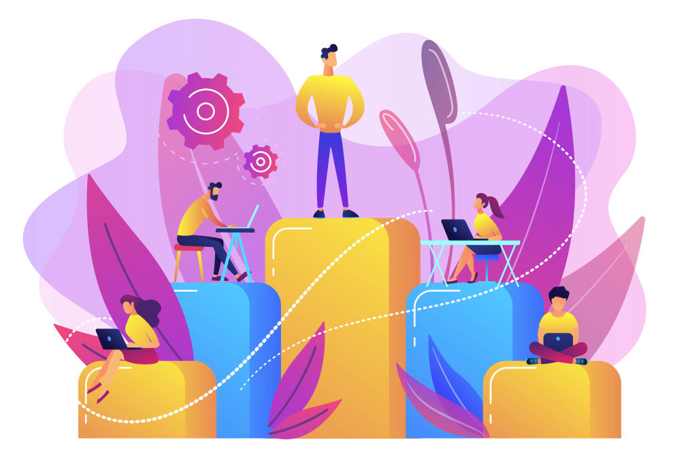

DosificaciónPresencial
Sesión 1
- Presentación y encuadre.
- Unidad 1. Innovación educativa.
Maestría en Educación · Universidad Cristóbal Colón
Al término del curso diseñarás un proyecto de innovación educativa que integre aspectos tecnológicos y atienda una problemática, según las necesidades de una institución educativa.
Mensaje de bienvenida
Te ofrezco una cálida bienvenida a esta nueva experiencia de aprendizaje, un espacio diseñado para repensar y transformar nuestra práctica docente, académica y educativa. Actualmente, innovar en educación va más allá de incorporar herramientas tecnológicas en el aula: implica comprender cómo cambian las instituciones, quiénes las lideran y qué decisiones pedagógicas hacen que una propuesta nueva se sostenga en el tiempo.
Durante las siguientes 5 semanas, nuestro objetivo será ir más allá de la revisión de las bases conceptuales de la innovación, para concentrarnos en analizar casos de proyectos exitosos, dialogar sobre los retos y desafíos de la innovación educativa en la era digital, y comprender la gestión institucional y pedagógica, el liderazgo educativo y la cultura del cambio como factores esenciales para que una innovación florezca de manera orgánica y no se quede en una buena intención.
Como persona profesional de la educación, la gestión de la innovación constituye una oportunidad para incidir en tu institución; por ello, al término del curso diseñarás un proyecto de innovación educativa que integre aspectos tecnológicos y responda a una problemática real, según las necesidades de la institución educativa que elijas. Para lograrlo, avanzaremos por las etapas de preparación, enfoque, incubación, iluminación, implementación, y seguimiento y medición.
Te invito a involucrarte de manera proactiva, a cuestionar los planteamientos del Programa de estudio y a forjar, mediante el diálogo académico y colaborativo, propuestas de innovación pertinentes, éticas y sostenibles.
Gracias por tu atención y por formar parte de esta comunidad de investigación, desarrollo y praxis.
Cordialmente, Herson Castellanos.
Compañero de aprendizaje

Mi nombre es Herson Alfonso Castellanos Celis y nos acompañaremos en esta aventura; te comparto algunos detalles de mi persona que podrían ser de interés, sin embargo, conocernos en una buena plática académica, podría ser una mejor idea... ¿qué opinas?
Planeación del aprendizaje
Del 24 de Octubre al 21 de Noviembre tendremos cinco sesiones, un sábado por semana. Cada sesión aborda una unidad del programa; los enlaces de Zoom de las siguientes sesiones se irán habilitando.
Contacto
Comparte tus dudas, comentarios y sugerencias sobre esta experiencia de aprendizaje; considera que la comunicación es la mejor herramienta para la mejora continua.
